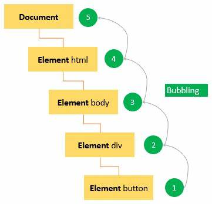

1. What is DOM and what is the purpose of DOM?
Answer:
The full meaning of DOM is Document Object Model. DOM generally consists of three things: HTML, CSS, and JavaScript. HTML is basically like a tree where Document and HTML act as parent tags and other elements such as title, URL, body act as notes.
The main purpose of DOM is to create a javascript object with all the html elements of a website. Which is a model of HTML.
2. How will you select HTML elements using DOM? Name the DOM methods.
Answer:
We can select HTML elements using DOM in many ways, like we can select using element's id name, we can select element's class name, we can select element's tag name, we can also select using query selector.
Name of the DOM methods:
document.getElementById(element id name)
document.getElementsByClassName(element class name)
document.getElementsByTagName(element tag name), etc.
3. What is event bubble?
Answer:
An event bubble is an event that moves from the lowest element to the highest element that means propagating and event from the lowest to the upward.
Fig of the event bubble
4. What is a callback function and why will you use it?
Answer:
A callback function is a function that is executed after another function is executed.
When a function can return another function and at the same time a function can take another function as an argument. And when such a function takes another function as an argument, we call the function passing that argument as a callback function.